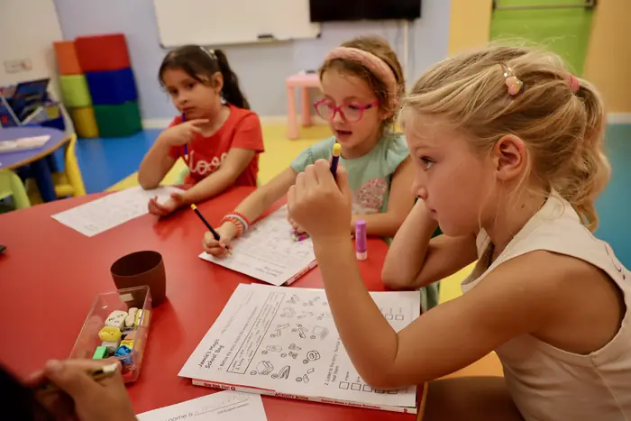
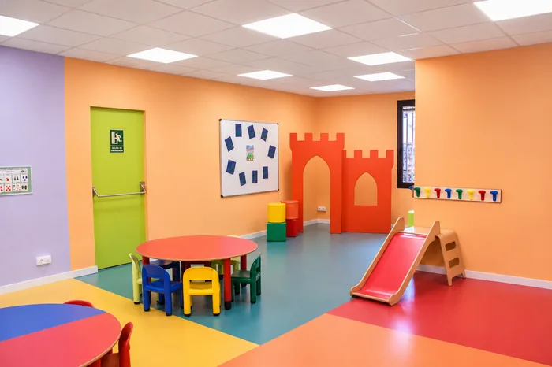
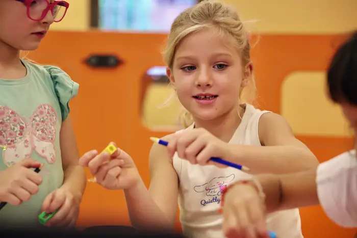
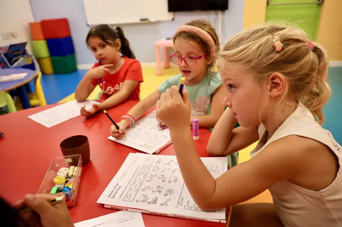
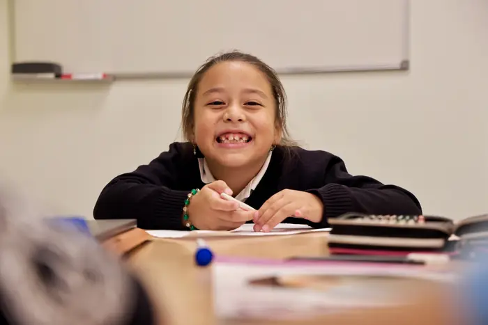

Els primers passos en anglès
Kids Planet és el nostre programa d'anglès per als més petits, des d'Infantil fins a 1r de Primària. A través de jocs, cançons i activitats dinàmiques, els infants descobreixen l'anglès d'una manera natural i adaptada a la seva edat.
Aprofitem l'energia d'aquesta edat per aprendre
A Kids Planet descobrim la llengua anglesa a través del joc, de la cançó i del conte. Sense pressió i amb ganes de tornar cada setmana.
La primera classe és gratuïtaClasses d'un màxim de 8 infants que afavoreixen la participació i una atenció propera.
Jocs, cançons, contes i activitats dinàmiques per descobrir l'anglès d'una manera divertida.
Un ambient agradable on els infants poden participar, experimentar i guanyar confiança. Les famílies poden acompanyar l'infant durant els primers dies.
Activitats pensades per a les diferents etapes, des d'Infantil fins a 1r de Primària.
L'aula Rainbow
Un espai pensat per als més petits, ple de colors i recursos que conviden a jugar i aprendre anglès en un ambient acollidor i estimulant.





Creixem en anglès
Kids Planet per a Infantil i Kids 1 per a 1r de Primària. A 2n de Primària, el pas natural és als cursos Kids.
-
Infantil
Kids Planet
Els més petits descobreixen l'anglès a través de jocs, cançons, contes i activitats dinàmiques, familiaritzant-se amb l'idioma d'una manera divertida i natural.
-
1r de Primària
Kids 1
Consolidació de les rutines orals i inici de la lectoescriptura en anglès.
-
2n a 6è de Primària
I després, Kids
Quan arriben a 2n de Primària, continuen el camí als cursos Kids.
Veure els cursos Kids
Trobeu l'horari que us encaixi millor
Una classe d'una hora a la setmana. A Kids 1 podeu triar dimecres o dijous.
| Nivell | Dies | Hora |
|---|---|---|
| Kids PlanetInfantil | Dilluns | 17:30–18:30 |
| Kids 11r de Primària | Dimecres | 17:30–18:30 |
| Kids 11r de Primària | Dijous | 17:15–18:15 |

Primera classe gratuïta, sense compromís
Voleu saber més sobre Kids Planet? Contacteu amb nosaltres i us informarem. Veniu a conèixer l'Aula Rainbow!